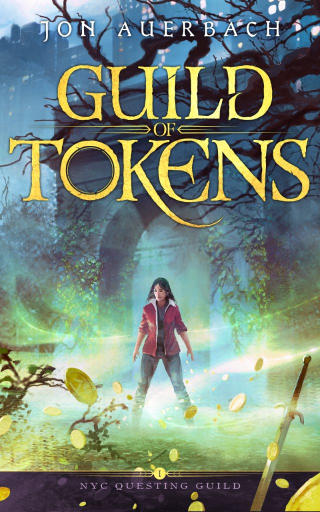

Guild of Tokens
Jen Jacobs stumbles across a real-life game of epic quests on the streets of New York and jumps at the chance for some excitement and gold tokens. Then a harrowing quest pairs her with Beatrice Taylor, who has her sights set on the Guild itself.
Little does she know that the items she strives to collect hold a darker purpose.